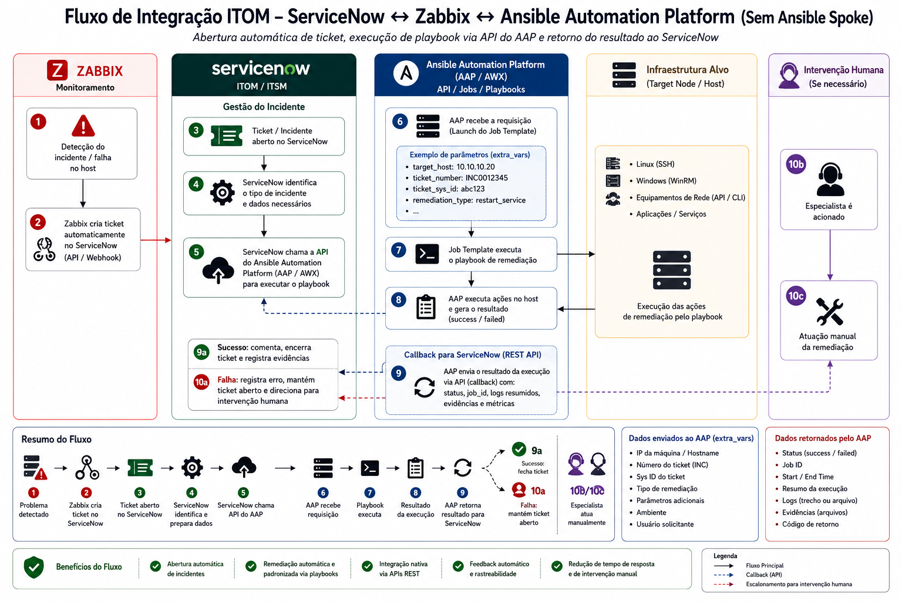

Este documento foi editado para compartilhamento externo ao ambiente do projeto: IPs, hostnames internos e links de gravação/SharePoint foram substituídos por descrições genéricas (marcados em itálico cinza). Nomes de pessoas e e-mails também foram mascarados por identificadores genéricos (marcados em caixa escura): Analista 1 = autor deste documento; Analistas 2–4 = demais membros da equipe Qintess; Administrador AAP e Especialista ServiceNow/Firewall = contatos técnicos do BASA/Chaintech.
Este projeto implementa um ciclo fechado de Monitoramento Inteligente e Remediação Automática (Auto-healing), integrando três tecnologias em um único fluxo de governança e execução: o Zabbix detecta a falha, o ServiceNow governa o processo via ITSM, e o Ansible Automation Platform (AAP) executa a correção — sem intervenção humana em falhas já conhecidas e repetitivas.
O objetivo é reduzir o Tempo Médio de Reparo (MTTR), seguindo o conceito de RCA (Root Cause Analysis) Orientada a Eventos: a detecção de um problema dispara automaticamente uma cadeia de governança (ITSM) e execução operacional (Automação).

Correlaciona as ações combinadas em reunião com o que realmente foi feito até agora, para dar visibilidade a todos os envolvidos (BASA, Chaintech, Qintess).
Legenda: 🟢 Concluído · 🟡 Parcial/Em andamento · 🔴 Pendente/Bloqueado · ⚪ Bloqueado por dependência de outro item
| # | Ação | Responsável | Status | Evidência / Observação |
|---|---|---|---|---|
| 1.1 | Permissão para criar credential type servicenow_callback | Administrador AAP | 🟡 Proposto p/ fechamento | Update do Analista 3 em 03/09: o tipo ServiceNow Garbage API já existe no AAP e atende a necessidade — provavelmente essa ação não precisa mais existir. Aguardando confirmação do Administrador AAP para fechar de vez |
| 1.2 | Role Credential Admin ao analista na org DevOps GPROD | Administrador AAP | 🔴 Pendente — bloqueio real | Confirmado em 27/08 ao criar o Job Template 88: dropdown de Credentials retornou "No results found". Com a credencial ServiceNow já criada (ver 1.4), esta é agora, junto com o item 2, a pendência que realmente trava o restante |
| 1.3 | Credencial de máquina (SSH, sudo) para [IP do servidor de homologação] | Admin AAP | 🔴 Pendente | Depende da role Credential Admin (item 1.2) |
| 1.4 | Credencial ServiceNow Garbage API ([instância ServiceNow QA], svc-evt-ansible-integration) | Analista 3 | 🟢 Concluído (03/09) | Criada na organização DevOps GPROD (id 36) e anexada ao Job Template 87. Job 9233 confirmou que o playbook lê as variáveis injetadas corretamente e a chamada chega ao [instância ServiceNow QA]. A credencial pessoal usada na validação inicial foi removida — não depende mais de conta de pessoa física |
| 2 | Liberar SSH porta 22 do [servidor de execução AAP] até [IP do servidor de homologação] | Infra/Rede | 🔴 Pendente | Sem teste novo; última evidência é o job 9074 (18/08), Connection refused. (Não confundir com a conectividade [servidor de execução AAP] → [instância ServiceNow QA], essa já confirmada — ver item 4.2). Atualização 17/09: Analista 3 redigiu o texto do chamado, já pronto para abrir (ver seção 3). Faltam 2 campos antes de enviar: IP de origem do [servidor de execução AAP] e o host de onde a equipe validou o SSH. Atenção: confirmar que o JT 87 está fixado no instance group "VM Execution" antes de abrir o chamado — se o job rodar no controlplane, sai com outro IP e a regra liberada não vale (alerta de Especialista Firewall/Rede) |
| 2.1 | Verificação preventiva de firewall: ServiceNow ([instância ServiceNow QA]) → [endpoint de automação AAP]:443 | Infra/Rede | 🔴 Pendente (não testado) | Item novo, levantado na reunião de 17/09. Esse fluxo (ServiceNow disparando a automação) ainda não foi testado; incluído como 3º pedido no mesmo chamado do item 2, como verificação preventiva. O sentido inverso ([servidor de execução AAP] → [instância ServiceNow QA]) já está liberado e confirmado |
| 4.1 | Rodar simulação do job-limpeza-disco-tmp (id 87) | — | ⚪ Bloqueado | Depende de 1.3 e 2 |
| 4.2 | Confirmar callback ServiceNow sem 401 | — | 🔴 Bloqueado | Jobs 9227/9229 (03/09) confirmaram que a requisição sai do [servidor de execução AAP], atravessa a rede e valida o certificado na 443 — o caminho de rede está OK. O 401 "User is not authenticated" persiste na resposta do [instância ServiceNow QA], isolado à conta de serviço. Hipóteses refinadas no contrato de payload ServiceNow, §6. Atualização 17/09: role identificada e incluída no texto do chamado (seção 3): snc_platform_rest_api_access para o usuário svc-evt-ansible-integration |
| 4.3 | Rodar job-limpeza-disco-poc (id 86) com credencial anexada | — | ⚪ Bloqueado | Depende de 1.3 e 2 |
| # | Ação | Responsável | Status | Evidência / Observação |
|---|---|---|---|---|
| 1 | Levantar templates existentes do Ansible | Equipe | 🟢 Concluído | Repo IaC completo (conf/playbooks/), projeto sincronizado no AAP |
| 2 | Validar playbook de restabelecimento do agente Zabbix | Equipe | 🟡 Em andamento | Job Template 88 criado com Survey completo. Revisão de código em 09/09 encontrou um bug (ver seção 2.3.b) que precisa ser corrigido antes de qualquer execução real valer como validação |
| 3 | Levantar requisitos de autenticação OAuth | Equipe | 🔴 Pendente | Integração usa Basic/Bearer via credencial ServiceNow Garbage API; OAuth2 formal nunca foi levantado |
| 4 | Validar credenciais de acesso à API | Equipe | 🔴 Bloqueado (testado e falhou) | Conta svc-evt-ansible-integration retorna 401 em todos os endpoints do [instância ServiceNow QA], inclusive na API própria do banco — problema é da conta, não do endpoint. Único item que depende do especialista ServiceNow |
| 5 | Definir payload e variáveis para integração | Equipe | 🟡 Em revisão | Documentado no contrato de payload ServiceNow e reaproveitado no playbook de restart do agente — mas ver divergência Incident x Alert na seção 2.3.a antes de considerar fechado |
| 6 | Preparar ambiente piloto de testes | Equipe | 🟡 Parcial | Inventário + 3 Job Templates criados (86, 87, 88). Credencial ServiceNow já criada e anexada ao JT 87 (03/09). Falta credencial de máquina + SSH liberado |
| 7 | Realizar reunião de validação técnica | Equipe | 🟡 Em andamento | Reunião de 26/08 gerou o checklist da seção 2.1 desta página |
Toda a documentação atual (README, contrato ServiceNow) e os dois playbooks (limpeza_disco_tmp.yml, restabelece_agente_zabbix.yml) são construídos em cima da tabela incident — o callback faz PATCH /api/now/table/incident/<sys_id> com state: "6" / close_code: "Solved (Permanently)". Revisando a ata da última reunião com Especialista ServiceNow (Chaintech), o fluxo esperado parece ser outro: Zabbix abre um Alerta, o analista pode disparar a remediação a partir do alerta antes de qualquer incidente existir, e o fluxo nunca abre nem fecha incidente — só fecha o alerta quando o retorno normaliza via callback.
Impacto: não é um ajuste de detalhe, é um desenho de integração diferente do implementado hoje. Bloqueia o envio do contrato ServiceNow para o Especialista ServiceNow (Chaintech) até isso ser alinhado.
restabelece_agente_zabbix.yml — falha falsa sempreEncontrado pelo Analista 3, confirmado no código (conf/playbooks/restabelece_agente_zabbix.yml:85,105):
argv: ["systemctl", "is-active", zabbix_servico]Faltam as chaves {{ }} — o Ansible não interpola a variável, então o comando roda literalmente contra a string "zabbix_servico". status_depois nunca fica "active", então a task "Falha se o agente não voltou a active" dispara sempre, mesmo quando o restart funcionou de verdade. Na prática o job falharia sempre e o incidente/alerta receberia nota de falha falsa. Ainda não corrigido — aguardando confirmação do Analista 2 antes de mexer.
no_log sem register)Mesmo playbook, tasks de callback (linhas 166, 194, 226): no_log: true nas chamadas HTTP de callback, sem register nas duas que de fato fazem a requisição (168 e 202). Qualquer erro de callback aparece só como "censored" no log, sem status code nem corpo de resposta. O mesmo problema já foi corrigido no limpeza_disco_tmp.yml (commit c13e3bc, 03/09) — falta só portar o mesmo padrão de fix para o restabelece_agente_zabbix.yml.
Ata completa na seção 3 deste documento. Esta reunião passa a ser rotineira, toda quinta-feira às 10:00 (Teams, gravada).
| Nome | E-mail Qintess | Acessos faltando |
|---|---|---|
| Analista 1 | [e-mail removido] | — (Zabbix OK) |
| Analista 2 | [e-mail removido] | — (Zabbix OK) |
| Analista 3 | [e-mail removido] | — (Zabbix OK) |
| Analista 4 | [e-mail removido] | Zabbix, ServiceNow, OpenShift, PRA |
O ambiente técnico (repositório, playbooks, Job Templates, contrato de payload) está pronto para os dois cenários (limpeza de disco e restabelecimento do agente Zabbix), com a ressalva da seção 2.3. O que trava a entrega:
snc_platform_rest_api_access (seção 2.4).Analista 2: Topologia de rede — marcar como já feito no planner. Será construída conforme o acesso disponível durante as atividades. Necessário conceitos visuais da topologia de rede: facilita e agiliza a compreensão.
Analista 1: "Bom dia Especialista Firewall/Rede. Se conseguir pra nós um status sobre o chamado para liberação de regra do agente do AAP → servidor de homologação, agradeço."
O servidor de homologação é: [IP do servidor de homologação] (está no PRA também), hostname: [hostname do servidor de homologação], servidor RHEL para desenvolvimento.
Problema reportado: connection refused do AAP para o servidor de homologação. Provavelmente bloqueio de firewall entre as redes (CORED), envolvendo o IP dos itens acima. Necessário verificar autorização de firewall e conexão direta com o servidor de homologação.
Elevação do usuário sudo: qual usuário (de serviço)? Verificar como o AAP precisa acessar o servidor de homologação:
svc-tower no projeto AAP: é necessária alguma chave SSH deste no servidor de homologação? (Presume-se necessidade de uma conta de serviço, usuário Linux, no servidor que consta no "Inventory" do AAP, de onde o AAP fará execução de jobs pelo Execution Environment e acessará os hosts constantes no Inventory — por enquanto, somente o servidor de homologação.)Problema que o Analista 3 apontou sobre ServiceNow → API → AAP. O que falta hoje: 1) autenticação e 2) permissão.
Verificar com Especialista ServiceNow (Chaintech), usuário svc-evt-ansible-integration. Dentro do AAP esse usuário retorna 401, especificamente nos endpoints ServiceNow:
/api/now/table/incident
/api/now/table/sys_user
/api/bada/garbage_automation_apiSugestão é adicionar a role: snc_platform_rest_api_access
Analista 3:
1. O usuário de serviço "svc-evt-ansible-integration" recebe 401 vindo da
própria instância ServiceNow. A requisição sai do nosso servidor,
atravessa a rede e valida o certificado, então o problema é
estritamente de autenticação/permissão.
2. O erro que temos não é timeout, é Connection refused: ssh: connect to
host [IP do servidor de homologação] port 22: Connection refused.
Bloqueio de firewall por drop dá timeout. Connection refused significa
que veio um TCP RST de volta — ou o pacote chegou no host e não há
nada escutando na porta 22 (sshd parado ou em outra porta), ou existe
uma regra configurada como reject em vez de drop na regra de firewall.Texto sugerido por Analista 3 (para o chamado de acesso):
Prezados, boa tarde!
Estamos finalizando a automação que integra Zabbix, ServiceNow e Ansible
Automation Platform: o incidente é aberto, a remediação executa sozinha no
servidor e o resultado volta registrado no chamado.
A automação já está pronta e testada. Faltam três liberações de acesso.
1. Firewall — SSH do Ansible para o servidor
Origem: [servidor de execução AAP] · IP __________ [preencher]
Destino: [IP do servidor de homologação]
Porta: 22/TCP
Sentido: unidirecional
É por aqui que a automação entra no servidor para executar as ações.
Hoje todas as tentativas falham com "Connection refused" (jobs 9074,
9118, 9120, 9227, 9229, 9231 e 9233 no AAP).
Já verificamos do nosso lado: o SSH do servidor está ativo e escutando
na 22 — conectamos com sucesso a partir do __________ [preencher]. O
bloqueio está no caminho de rede.
Um detalhe que ajuda na busca: o retorno é "Connection refused", não
timeout. Bloqueio por drop costuma dar timeout, então o RST indica uma
regra de reject. Procurar só por regras de drop pode não localizá-la.
2. ServiceNow — permissão do usuário de serviço para o callback
Instância: [instância ServiceNow QA]
Usuário: svc-evt-ansible-integration
Permissão: acesso à REST API com escrita em incident
Role: snc_platform_rest_api_access
É por aqui que a automação devolve o resultado: registra a nota técnica
no incidente e, quando a remediação dá certo, resolve o chamado.
Hoje o usuário retorna HTTP 401 "User is not authenticated" em todos os
endpoints que testamos — /api/now/table/incident, /api/now/table/sys_user
e /api/bada/garbage_automation_api. Como falha inclusive na API própria
do banco, parece ser permissão da conta e não do endpoint.
Vale registrar que o 401 vem da própria instância: a requisição sai,
atravessa a rede e valida o certificado. Não há bloqueio de rede aqui,
e o teste foi refeito com a credencial oficial já configurada no AAP.
Não estamos pedindo nenhum desenvolvimento no ServiceNow — o callback
usa apenas a Table API padrão.
3. Firewall — ServiceNow para o Ansible (verificação preventiva)
Origem: ServiceNow [instância QA] (faixa de saída, a confirmar com o time)
Destino: [endpoint de automação AAP]
Porta: 443/TCP
Sentido: unidirecional
É por aqui que o ServiceNow dispara a automação. Esse fluxo ainda não
foi testado, e pedimos a verificação para que não vire um bloqueio na
hora da implementação. O sentido inverso, do Ansible para o ServiceNow,
já está liberado e confirmado em teste.
Sobre credenciais: senhas e chaves não devem trafegar por e-mail ou chamado.
Se algo precisar ser provisionado ou redefinido, nos avisem para fazermos
por cofre.
Assim que os acessos saírem, rodamos a automação em modo simulação — que só
inventaria o que seria removido, sem alterar nada no servidor — e voltamos
com o resultado aqui.
Obrigado!
Dois campos: o IP do servidor de execução AAP e o servidor de onde foi
testado o SSH.
Lembrando do ponto do instance group: se o JT 87 não for fixado em "VM
Execution", o job pode rodar no controlplane e sair com outro IP — aí a
regra do item 1 não pega. Vale fixar antes de abrir o chamado.| Nome | E-mail Qintess | Acessos faltando |
|---|---|---|
| Analista 1 | [e-mail removido] | Zabbix |
| Analista 2 | [e-mail removido] | Zabbix |
| Analista 3 | [e-mail removido] | Zabbix |
| Analista 4 | [e-mail removido] | Zabbix, ServiceNow, OpenShift, PRA |
[link interno do repositório GitLab removido] — adicionar material criado de reuniões aqui.
Especialista Firewall/Rede: lembrete de que essa reunião é rotineira, quinta-feira às 10:00h.
A gravação da reunião está disponível na thread do canal DevOps GPROD da equipe DevOps GPROD no Teams, e também no diretório Records do SharePoint desta equipe (sem expiração).
[links internos de chat, recapitulação e gravação da reunião no Teams/SharePoint removidos]